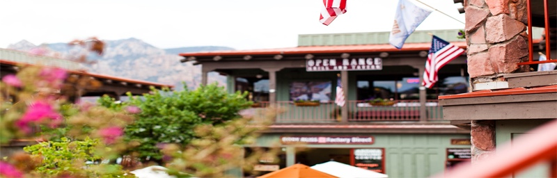
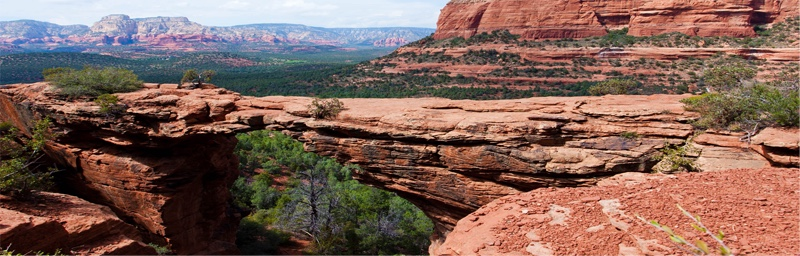

Седона
Седона — небольшой городок в Аризоне, заслуживающий большего
Рассмотрим 5 причин, по которым Седона круче, чем Гранд Каньон!
Настоящий городок — №1 — Седона — не аттракцион для туристов, там течёт своя жизнь

Жильё
Рекомендуем пожить в настоящем мотеле, всё как в кино!
Еда
Всегда заказывайте фирменный бургер, вы не разочаруетесь!
Сувениры
Не только китайского, но и местного производства
Там есть
Мост дьявола
— №2 —
Да, по нему можно пройти! Если конечно вы осмелитесь

Небольшая
площадь
— №3 —
Все достопримечательности
находятся очень близко
Красивая
дорога
— №4 —
Ехать в Седону из Лас-Вегаса совсем
не скучно!
Мало
туристов
— №5 —
Большинство едет в гранд каньон
и толпится там
Укажите предполагаемые даты поездки, и мы покажем вам лучшие предложения гостиниц в Седоне
Дата заезда:
Дата выезда:
Взрослые:
Дети: